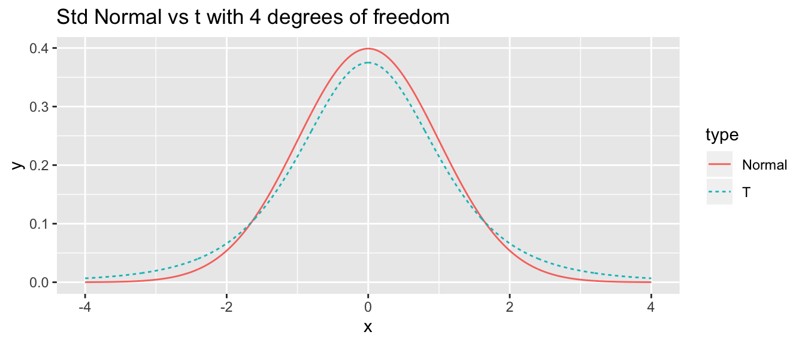

Chapter 6 Flow Control
Often it is necessary to write scripts that perform different action depending on the data or to automate a task that must be repeated many times. To address these issues we will introduce the if statement and its closely related cousin if else. To address repeated tasks we will define two types of loops, a while loop and a for loop.
6.1 Decision statements
6.1.1 In dplyr wrangling
A very common task within a data wrangling pipeline is to create a new column that recodes information in another column. Consider the following data frame that has name, gender, and political party affiliation of six individuals. In this example, we’ved coded male/female as 1/0 and political party as 1,2,3 for democratic, republican, and independent.
people <- data.frame(
name = c('Michelle', 'Barack', 'George', 'Laura', 'Bernie', 'Deborah'),
gender = c(0,1,1,0,1,0),
party = c(1,1,2,2,3,3)
)
people## name gender party
## 1 Michelle 0 1
## 2 Barack 1 1
## 3 George 1 2
## 4 Laura 0 2
## 5 Bernie 1 3
## 6 Deborah 0 3The command ifelse() works quite well within a dplyr::mutate() command and it responds correctly to vectors. The syntax is ifelse( logical.expression, TrueValue, FalseValue ).
## name gender party gender2
## 1 Michelle 0 1 Female
## 2 Barack 1 1 Male
## 3 George 1 2 Male
## 4 Laura 0 2 Female
## 5 Bernie 1 3 Male
## 6 Deborah 0 3 FemaleTo do something similar for the case where we have 3 or more categories, we can use the ifelse() command repeatedly to address each category level seperately.
people %>%
mutate( party2 = ifelse( party == 1, 'Democratic', party),
party2 = ifelse( party2 == 2, 'Republican', 'Independent') )## name gender party party2
## 1 Michelle 0 1 Independent
## 2 Barack 1 1 Independent
## 3 George 1 2 Republican
## 4 Laura 0 2 Republican
## 5 Bernie 1 3 Independent
## 6 Deborah 0 3 IndependentThe same results can be obtained more easily using the forcats::fct_recode() function. See the Factors chapter in this book.
6.1.2 General if else
While programming, I often need to perform expressions that are more complicated than what the ifelse() command can do. The general format of an if or and if else is presented here.
# Simplest version
if( logical.test ){
expression # can be many lines of code
}
# Including the optional else
if( logical.test ){
expression
}else{
expression
}where the else part is optional.
Suppose that I have a piece of code that generates a random variable from the Binomial distribution with one sample (essentially just flipping a coin) but I’d like to label it head or tails instead of one or zero.
## [1] 0## [1] "Tail"What is happening is that the test expression inside the if() is evaluated and if it is true, then the subsequent statement is executed. If the test expression is false, the next statement is skipped. The way the R language is defined, only the first statement after the if statement is executed (or skipped) depending on the test expression. If we want multiple statements to be executed (or skipped), we will wrap those expressions in curly brackets { }. I find it easier to follow the if else logic when I see the curly brackets so I use them even when there is only one expression to be executed. Also notice that the RStudio editor indents the code that might be skipped to try help give you a hint that it will be conditionally evaluated.
## [1] 0# convert the 0/1 to Tail/Head
if( result == 0 ){
result <- 'Tail'
print(" in the if statement, got a Tail! ")
}else{
result <- 'Head'
print("In the else part!")
}## [1] " in the if statement, got a Tail! "## [1] "Tail"Run this code several times until you get both cases several times. Notice that in the Evironment tab in RStudio, the value of the variable result changes as you execute the code repeatedly.
Finally we can nest if else statements together to allow you to write code that has many different execution routes.
# randomly grab a number between 0,5 and round it up to 1,2, ..., 5
birth.order <- ceiling( runif(1, 0,5) )
if( birth.order == 1 ){
print('The first child had more rules to follow')
}else if( birth.order == 2 ){
print('The second child was ignored')
}else if( birth.order == 3 ){
print('The third child was spoiled')
}else{
# if birth.order is anything other than 1, 2 or 3
print('No more unfounded generalizations!')
}## [1] "No more unfounded generalizations!"To provide a more statistically interesting example of when we might use an if else statement, consider the calculation of a p-value in a 1-sample t-test with a two-sided alternative. Recall the calculate was:
If the test statistic t is negative, then p-value = \(2*P\left(T_{df} \le t \right)\)
If the test statistic t is positive, then p-value = \(2*P\left(T_{df} \ge t \right)\).
# create some fake data
n <- 20 # suppose this had a sample size of 20
x <- rnorm(n, mean=2, sd=1)
# testing H0: mu = 0 vs Ha: mu =/= 0
t <- ( mean(x) - 0 ) / ( sd(x)/sqrt(n) )
df <- n-1
if( t < 0 ){
p.value <- 2 * pt(t, df)
}else{
p.value <- 2 * (1 - pt(t, df))
}
# print the resulting p-value
p.value## [1] 1.088654e-08This sort of logic is necessary for the calculation of p-values and so something similar is found somewhere inside the t.test() function.
6.2 Loops
It is often desirable to write code that does the same thing over and over, relieving you of the burden of repetitive tasks. To do this we’ll need a way to tell the computer to repeat some section of code over and over. However we’ll usually want something small to change each time through the loop and some way to tell the computer how many times to run the loop or when to stop repeating.
6.2.1 while Loops
The basic form of a while loop is as follows:
# while loop with multiple lines to be repeated
while( logical ){
expression1 # multiple lines of R code
expression2
}The computer will first evaluate the test expression. If it is true, it will execute the code once. It will then evaluate the test expression again to see if it is still true, and if so it will execute the code section a third time. The computer will continue with this process until the test expression finally evaluates as false.
x <- 2
while( x < 100 ){
print( paste("In loop and x is now:", x) ) # print out current value of x
x <- 2*x
}## [1] "In loop and x is now: 2"
## [1] "In loop and x is now: 4"
## [1] "In loop and x is now: 8"
## [1] "In loop and x is now: 16"
## [1] "In loop and x is now: 32"
## [1] "In loop and x is now: 64"It is very common to forget to update the variable used in the test expression. In that case the test expression will never be false and the computer will never stop. This unfortunate situation is called an infinite loop.
6.2.2 for Loops
Often we know ahead of time exactly how many times we should go through the loop. We could use a while loop, but there is also a second construct called a for loop that is quite useful.
The format of a for loop is as follows:
where the index variable will take on each value in vector in succession and then statement will be evaluated. As always, statement can be multiple statements wrapped in curly brackets {}.
## [1] "In the loop and current value is i = 1"
## [1] "In the loop and current value is i = 2"
## [1] "In the loop and current value is i = 3"
## [1] "In the loop and current value is i = 4"
## [1] "In the loop and current value is i = 5"What is happening is that i starts out as the first element of the vector c(1,2,3,4,5), in this case, i starts out as 1. After i is assigned, the statements in the curly brackets are then evaluated. Once we get to the end of those statements, i is reassigned to the next element of the vector c(1,2,3,4,5). This process is repeated until i has been assigned to each element of the given vector. It is somewhat traditional to use i and j and the index variables, but they could be anything.
We can use this loop to calculate the first \(10\) elements of the Fibonacci sequence. Recall that the Fibonacci sequence is defined by \(F_{n}=F_{n-1}+F_{n-2}\) where \(F_{1}=0\) and \(F_{2}=1\).
F <- rep(0, 10) # initialize a vector of zeros
F[1] <- 0 # F[1] should be zero
F[2] <- 1 # F[2] should be 1
print(F) # Show the value of F before the loop ## [1] 0 1 0 0 0 0 0 0 0 0for( n in 3:10 ){
F[n] <- F[n-1] + F[n-2] # define based on the prior two values
print(F) # show F at each step of the loop
}## [1] 0 1 1 0 0 0 0 0 0 0
## [1] 0 1 1 2 0 0 0 0 0 0
## [1] 0 1 1 2 3 0 0 0 0 0
## [1] 0 1 1 2 3 5 0 0 0 0
## [1] 0 1 1 2 3 5 8 0 0 0
## [1] 0 1 1 2 3 5 8 13 0 0
## [1] 0 1 1 2 3 5 8 13 21 0
## [1] 0 1 1 2 3 5 8 13 21 34For a more statistical case where we might want to perform a loop, we can consider the creation of the bootstrap estimate of a sampling distribution.
library(dplyr)
library(ggplot2)
SampDist <- data.frame() # Make a data frame to store the means
for( i in 1:1000 ){
SampDist <- trees %>%
dplyr::sample_frac(replace=TRUE) %>%
dplyr::summarise(xbar=mean(Height)) %>% # 1x1 data frame
rbind( SampDist )
}
ggplot(SampDist, aes(x=xbar)) +
geom_histogram( binwidth=0.25)
6.3 Exercises
- I’ve created a dataset about presidential candidates for the 2020 US election and it is available on the github website for my STA 141
The \(Uniform\left(a,b\right)\) distribution is defined on x \(\in [a,b]\) and represents a random variable that takes on any value of between
aandbwith equal probability. Technically since there are an infinite number of values betweenaandb, each value has a probability of 0 of being selected and I should say each interval of width \(d\) has equal probability. It has the density function \[f\left(x\right)=\begin{cases} \frac{1}{b-a} & \;\;\;\;a\le x\le b\\ 0 & \;\;\;\;\textrm{otherwise} \end{cases}\]The R function
dunif()a <- 4 # The min and max values we will use for this example b <- 10 # Could be anything, but we need to pick something x <- runif(n=1, 0,10) # one random value between 0 and 10 # what is value of f(x) at the randomly selected x value? dunif(x, a, b)## [1] 0.1666667evaluates this density function for the above defined values of x, a, and b. Somewhere in that function, there is a chunk of code that evaluates the density for arbitrary values of \(x\). Run this code a few times and notice sometimes the result is \(0\) and sometimes it is \(1/(10-4)=0.16666667\).
Write a sequence of statements that utilizes an if statements to appropriately calculate the density of x assuming that
a,b, andxare given to you, but your code won’t know ifxis betweenaandb. That is, your code needs to figure out if it is and give either1/(b-a)or0.We could write a set of if/else statements
a <- 4 b <- 10 x <- runif(n=1, 0,10) # one random value between 0 and 10 if( x < a ){ result <- ??? }else if( x <= b ){ result <- ??? }else{ result <- ??? } print(paste('x=',round(x,digits=3), ' result=', round(result,digits=3)))Replace the
???with the appropriate value, either 0 or \(1/\left(b-a\right)\).We could perform the logical comparison all in one comparison. Recall that we can use
&to mean “and” and|to mean “or”. In the following two code chunks, replace the???with either&or|to make the appropriate result.
I often want to repeat some section of code some number of times. For example, I might want to create a bunch plots that compare the density of a t-distribution with specified degrees of freedom to a standard normal distribution.
library(ggplot2) df <- 4 N <- 1000 x <- seq(-4, 4, length=N) data <- data.frame( x = c(x,x), y = c(dnorm(x), dt(x, df)), type = c( rep('Normal',N), rep('T',N) ) ) # make a nice graph myplot <- ggplot(data, aes(x=x, y=y, color=type, linetype=type)) + geom_line() + labs(title = paste('Std Normal vs t with', df, 'degrees of freedom')) # actually print the nice graph we made print(myplot)
Use a for loop to create similar graphs for degrees of freedom \(2,3,4,\dots,29,30\).
In retrospect, perhaps we didn’t need to produce all of those. Rewrite your loop so that we only produce graphs for \(\left\{ 2,3,4,5,10,15,20,25,30\right\}\) degrees of freedom. Hint: you can just modify the vector in the
forstatement to include the desired degrees of freedom.
The
forloop usually is the most natural one to use, but occasionally we have occasions where it is too cumbersome and a different sort of loop is appropriate. One example is taking a random sample from a truncated distribution. For example, I might want to take a sample from a normal distribution with mean \(\mu\) and standard deviation \(\sigma\) but for some reason need the answer to be larger than zero. One solution is to just sample from the given normal distribution until I get a value that is bigger than zero.mu <- 0 sigma <- 1 x <- rnorm(1, mean=mu, sd=sigma) print(x) # start the while loop checking if x < 0 # generate a new x value # print the new x value # end the while loopReplace the comments in the above code so that x is a random observation from the truncated normal distribution.